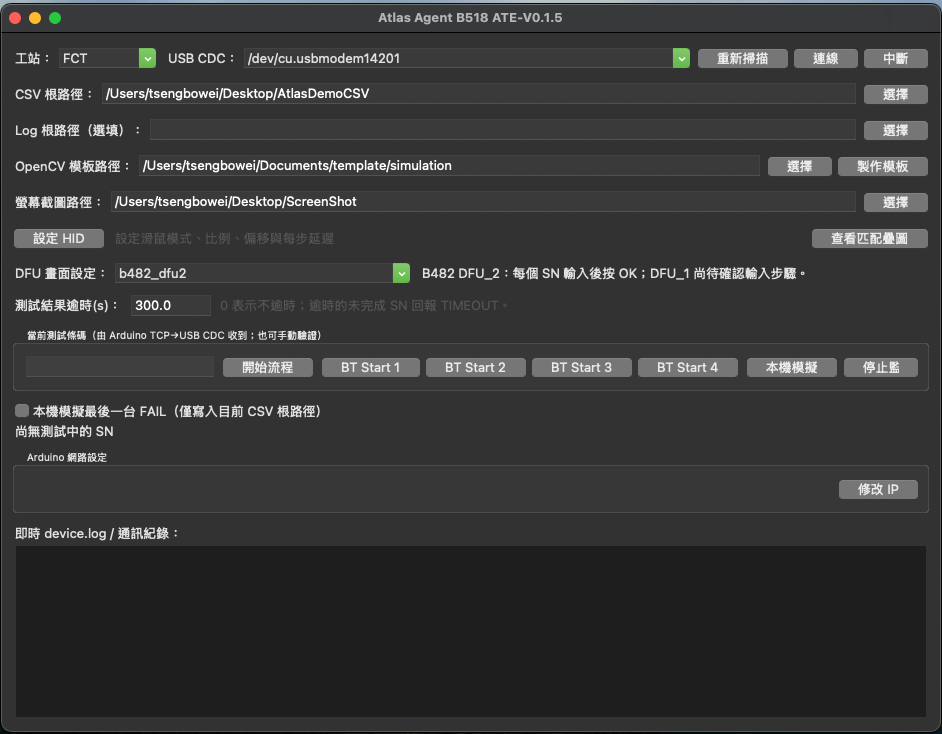
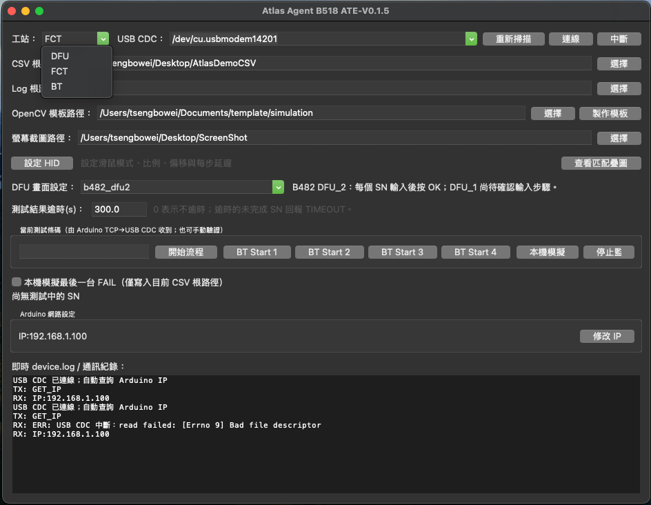
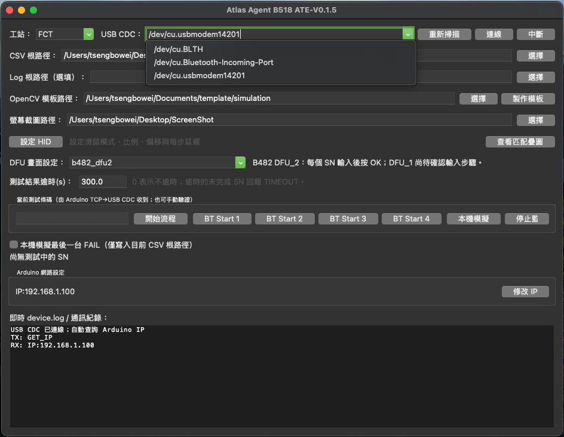
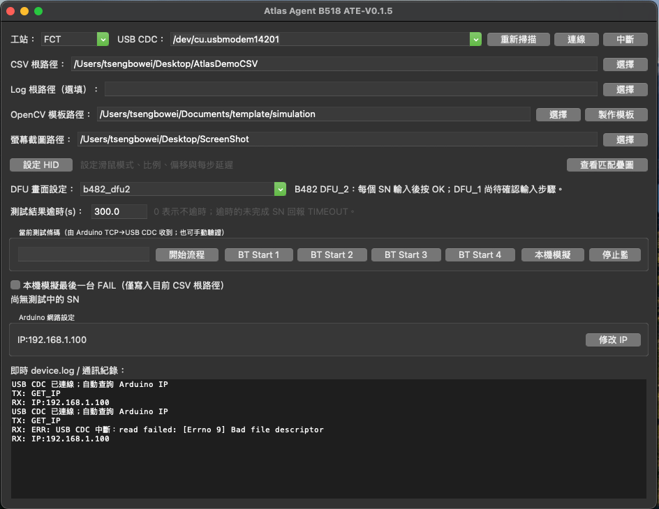
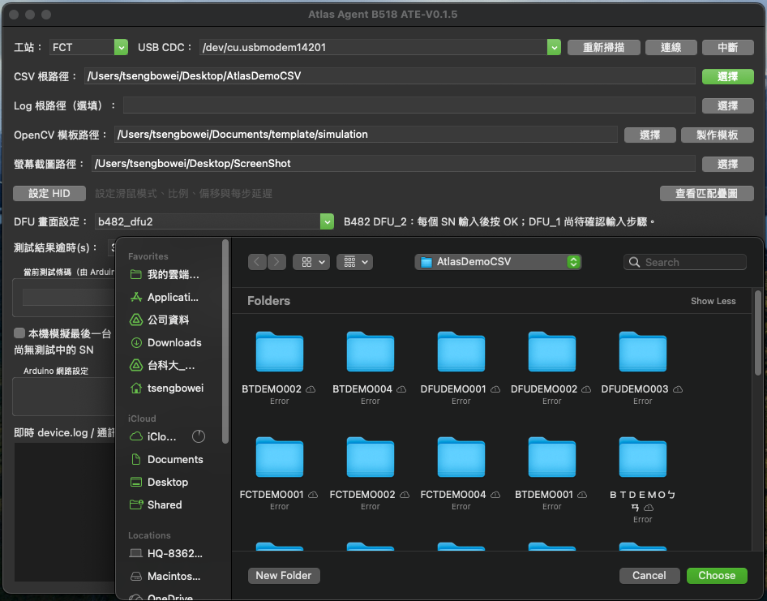
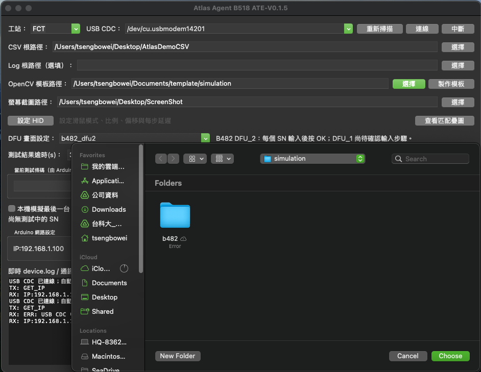
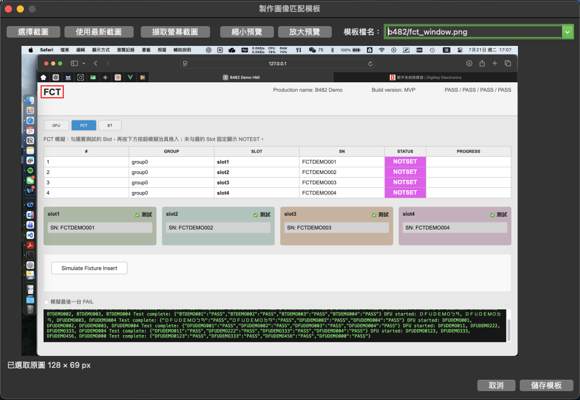
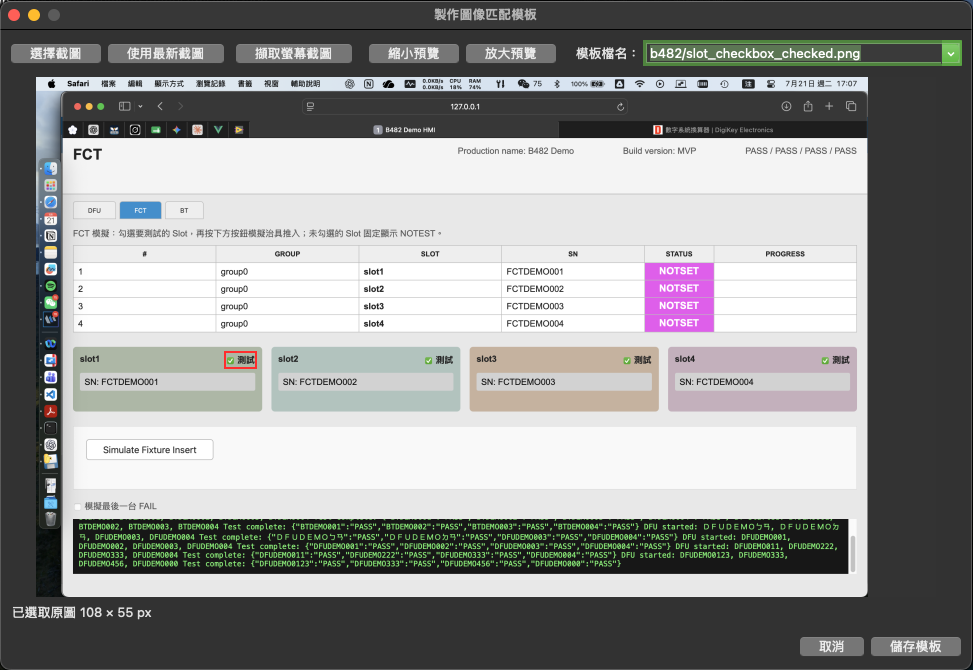
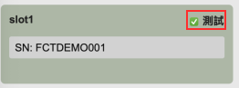
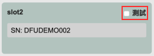

1. 啟動前準備
- Arduino 已燒錄
B518_Arduino_MVP_Test.ino。 - Arduino USB 接到本台 Mac mini，W5100 接到產線 switch。
- Arduino IDE Serial Monitor 已關閉。
- 測試機 HMI 完整放在單一螢幕，不跨越雙螢幕邊界。
- DFU／FCT 的 CSV 根路徑可讀寫；BT 不使用 Atlas CSV。
- 螢幕截圖資料夾已建立，macOS 可在該處儲存 Command+Shift+3 截圖。
2. 主畫面與 Arduino 連線
程式開啟後先核對工站、四個路徑與 USB CDC。這些資料會自動記憶上次設定，但換設備、換帳號或移動資料夾後仍須重新確認。

| 畫面區域／按鍵 | 用途 | 操作重點 |
|---|---|---|
| 工站 | 切換 DFU、FCT、BT 工作流程 | 啟動後第一個確認；必須與本台測試儀器一致。 |
| USB CDC／重新掃描／連線／中斷 | 選擇並管理 Arduino USB 序列連線 | 選 /dev/cu.usbmodem…，不要選 Bluetooth port。 |
| CSV 根路徑 | DFU／FCT 監控 SN 測試資料 | 要選到包含各 SN 資料夾的最上層根目錄。 |
| Log 根路徑 | 指定額外的 device.log 根目錄 | 選填；留白時由 CSV 根路徑尋找。 |
| OpenCV 模板路徑／製作模板 | 讀取及建立畫面定位模板 | 建議放在本機 Documents/template。 |
| 螢幕截圖路徑 | 讀取 Arduino 觸發後由 macOS 儲存的截圖 | 必須與 macOS 實際截圖儲存位置一致。 |
| 設定 HID／查看匹配疊圖 | 設定游標比例、模式、偏移與延遲；檢查辨識位置 | 定位正確但游標偏移時才調整 HID。 |
| DFU 畫面設定／測試逾時 | 選擇 DFU HMI 類型與整批測試逾時 | 非 DFU 工站仍可顯示，但不影響 FCT／BT 流程。 |
| 當前測試條碼與流程按鍵 | 手動驗證 JOB、啟動流程、單獨啟動 BT slot、停止監聽 | 正式量產以 Arduino TCP 收到的 JOB 為主。 |
| Arduino 網路設定／修改 IP | 顯示並修改 Arduino Ethernet IP | USB 連線後自動查詢；每片 Arduino IP 必須唯一。 |
| 即時 device.log／通訊紀錄 | 顯示 USB 指令、影像流程、CSV 與結果狀態 | 發生異常時先保存這一區的完整內容。 |
選擇正確工站
在左上選擇本機實際用途：DFU、FCT 或 BT。收到不同工站的 JOB 時，Agent 會拒絕並回覆 WRONG_STATION。

掃描並選擇 USB CDC
按「重新掃描」，從下拉選單選擇 Arduino 的 /dev/cu.usbmodem…。若只有一台，程式通常會自動選取。Bluetooth-Incoming-Port 與 BLTH 不是 Arduino。

usbmodem 的 Arduino USB CDC；不要選擇藍牙序列埠。按「連線」並等待自動取得 IP
成功後 Agent 立即送出 GET_IP，Arduino 網路設定區會自動顯示實際 IP，不需要再按查詢按鈕。

USB CDC 已連線、TX: GET_IP、RX: IP:...，且 IP 顯示區同步更新。圖中後段的 read failed 是手動中斷／重連時的紀錄，不是第一次成功連線的必要訊息。確認通訊 Log
至少要看到 USB CDC 已連線、TX: GET_IP 與 RX: IP:...。缺少其中一項都不要開始量產測試。
3. 工站與路徑設定
CSV 根路徑：選擇 SN 資料夾的最上層
按 CSV 根路徑右側的「選擇」，在資料夾瀏覽器中選到包含所有 SN 資料夾的根目錄。不要選某一個 SN 資料夾，也不要選到單筆時間戳資料夾；選錯時 Agent 無法監控新的 records.csv 與 device.log。

AtlasDemoCSV 根目錄；視窗內可看到多個 SN 子資料夾，表示選擇層級正確。OpenCV 模板路徑：使用固定的本機資料夾
建議先在本機 Documents 建立 template 資料夾，再由「OpenCV 模板路徑」選到該資料夾。若分正式機與模擬環境，可再建立 production、simulation 子資料夾；程式會在所選位置下建立或使用 b482/。

~/Documents/template/simulation。量產設備應使用固定且可離線讀取的位置，避免操作期間移動或重新命名。螢幕截圖路徑：必須和 macOS 設定一致
macOS 預設將螢幕截圖存到 Desktop（桌面）。若另外建立 ScreenShot 等專用資料夾，需把 Agent 的「螢幕截圖路徑」指定到同一資料夾。路徑不一致時，Arduino 雖然已按下截圖快捷鍵，Agent 仍會因找不到新檔案而逾時。
| 欄位 | DFU | FCT | BT |
|---|---|---|---|
| CSV 根路徑 | 必填，指向 Atlas CSV 最上層 | 必填，指向 Atlas CSV 最上層 | 不使用，可保留 |
| Log 根路徑 | 選填；若留白，DFU/FCT 從 CSV 根路徑尋找 device.log | ||
| OpenCV 模板路徑 | 必填 | 稀疏 slot checkbox 時必填 | 必填 |
| 螢幕截圖路徑 | 必填 | 稀疏 slot 時必填 | 必填 |
| 測試結果逾時 | 預設 300 秒；0 表示不逾時。未完成 SN 回報 TIMEOUT。 | ||
Atlas CSV 結構
CSV 根路徑/
└── <SN>/
└── YYYYMMDD_HH-MM-SS.<識別碼>/
└── system/
├── device.log
└── records.csvAgent 只接受開始流程之後建立的新資料；records.csv 任一 status 為 FAIL，該 SN 即判定 FAIL。
設定 HID
按「設定 HID」可調整每步延遲、X/Y 比例與偏移、relative／absolute 模式及虛擬桌面尺寸。一般 Retina 2880×1800 對應邏輯 1440×900 時，自動比例通常為 0.5。
4. 製作 OpenCV 影像模板
模板必須由「實際部署電腦、實際螢幕解析度、實際 HMI 縮放」的 Arduino 截圖製作。畫面縮放或主題改變後應重做。
模板製作視窗與按鍵
| 按鍵／區域 | 功能 | 使用時機 |
|---|---|---|
| 選擇截圖 | 從任意資料夾挑選既有 PNG 截圖 | 已有指定的標準畫面或要重做舊模板時。 |
| 使用最新截圖 | 讀取「螢幕截圖路徑」內最新的截圖 | 已手動按 Command+Shift+3，並確認檔案完成落盤時。 |
| 擷取螢幕截圖 | 命令 Arduino HID 觸發 Command+Shift+3，等待新檔案後載入 | 希望在模板視窗內完成截圖；必須先連線 Arduino。 |
| 縮小預覽／放大預覽 | 調整工作區預覽倍率 | 只影響框選操作，不會改變原圖或模板像素。 |
| 模板檔名 | 選擇目前工站要求的相對檔名 | 先選正確名稱，再框選並儲存；不同工站清單不同。 |
| 影像工作區 | 以滑鼠拖曳紅色矩形框選模板 | 下方會顯示已選取原圖的像素寬高。 |
| 儲存模板 | 把框選區域存到 OpenCV 模板根路徑 | 紅框、模板名稱都確認後再按。 |
| 取消 | 關閉視窗，不儲存本次框選 | 選錯圖片、工站或模板名稱時。 |

把測試 HMI 放到目標畫面
畫面不要被其他視窗遮住，且完整位於單一螢幕。切換到要製作的工站頁面。
確認 Agent 已連線 Arduino
「擷取螢幕截圖」要透過 Arduino 送出 Command+Shift+3，因此必須先建立 USB CDC 連線。
選擇模板根路徑
在「OpenCV 模板路徑」選擇根資料夾。建議使用 ~/Documents/template 或設備專用子資料夾。
按「製作模板」
模板檔名下拉選單會依目前工站顯示所需名稱。不要任意改名，Agent 依相對檔名判斷用途。
取得截圖
可按「擷取螢幕截圖」、選擇既有截圖，或按「使用最新截圖」。Arduino 截圖約需 5 秒落檔，最長等待 15 秒。
框選穩定區域
拖曳框選控制項或固定標題。框選應緊貼目標、保留足夠辨識特徵，不要包含游標、時間、SN、PASS/FAIL 等會變內容。
選擇名稱並儲存
逐一選擇下拉檔名後按「儲存模板」。子資料夾 b482/ 會自動建立。
用疊圖驗證
執行一次流程後按「查看匹配疊圖」。綠框應精準包住模板，紅十字為定位中心；游標偏移則調整 HID，而不是隨意重裁模板。
FCT 範例：依序製作三種模板
先在 Agent 主畫面選擇 FCT 工站，再開啟模板製作視窗。以下三個檔名缺一不可，且 checked／unchecked 需從相同解析度與相同 HMI 位置製作。
b482/fct_window.png：框選固定且唯一的 FCT 視窗標題或標誌，供程式定位整個測試畫面。不要包含 SN、STATUS、日期與游標。b482/slot_checkbox_checked.png：框選已勾選的 checkbox 與足以辨識的固定文字。b482/slot_checkbox_unchecked.png：用相同大小與範圍框選未勾選狀態，避免兩份模板因裁切範圍不同而誤判。

slot_checkbox_checked.png：右上檔名選對後，紅框只保留 checkbox 與固定的「測試」文字。

5. 各工站模板清單
DFU — B482 DFU_2
b482/dfu2_window.png
b482/dfu2_sn_input.png
b482/dfu2_ok.png
b482/slot_checkbox_checked.png
b482/slot_checkbox_unchecked.pngchecked／unchecked 應只裁 checkbox 本體與足以辨識狀態的固定區域。稀疏 JOB 會在輸入條碼前重新截圖驗證四個 checkbox，不正確時補正一次；仍不符就停止。
FCT
b482/fct_window.png
b482/slot_checkbox_checked.png
b482/slot_checkbox_unchecked.png四個 slot 全滿時 FCT 可直接監聽；稀疏 slot 才需要定位並同步 checkbox。
BT
b482/bt_window.png
b482/bt_start_all.png
b482/bt_start_1.png
b482/bt_start_2.png
b482/bt_start_3.png
b482/bt_start_4.png
b482/bt_status_pass.png
b482/bt_status_fail.png
b482/bt_status_testing.png
b482/bt_status_notset.png每個 STATUS 模板請裁一個完整狀態格（背景＋文字）。SN 由 macOS Vision 針對每列 SN 儲存格單獨 OCR，不需要另外製作 SN 模板。
6. 日常測試操作
正式上位機模式
正常量產由 Windows 上位機透過 Arduino TCP 傳入 JOB，Agent 自動顯示當前 JOB 並回覆 ACK。範例：
DFU:JOB=20260723-001;1=SN001,2=SN002,4=SN004\r\nDFU
截圖定位 → 同步 checkbox → 逐筆點 SN 輸入框與 OK → 全部輸入後監聽 CSV。
FCT
全 slot 直接監聽；稀疏 slot 先同步 checkbox。治具推入後由設備自動開始。
BT
全四 slot 按 Start All；稀疏 slot 分別按 Start 1～4。先看到所有指定 slot TESTING，全部結束後才判定。
手動驗證模式
可在「當前測試條碼」輸入逗號分隔 SN 後按「開始流程」。正式量產仍應使用含 JOB ID 與 slot 的結構化命令。
BT SN 人工覆核
BT 在 TESTING 後逐列 OCR 設備 SN。若與上位機 SN 不符或讀取不完整，測試仍跑完，之後顯示覆核視窗：
- 確認並以設備 SN 回報：操作員確認／修正後，以設備實際 SN 組成 RESULT。
- 取消並回報 NACK：不送 RESULT，回覆
NACK:BT_SN_MISMATCH。
7. 結果與通訊紀錄
ACK 代表已接單，不代表測試完成：
ACK:DFU:JOB=20260723-001\r\n所有指定 slot 完成後才回傳：
RESULT:DFU:JOB=20260723-001;1=SN001,PASS;2=SN002,PASS;4=SN004,FAIL\r\n| Log 關鍵字 | 意義／FAE 行動 |
|---|---|
| ACK | Agent 已接受 JOB，等待測試完成。 |
| RESULT | 本 JOB 所有指定 slot 已完成。 |
| BUSY | 前一 JOB 尚未完成，上位機不可覆蓋；等待結果後再送。 |
| START_FAILED | 影像定位、HID 或 checkbox 驗證失敗；查看保留截圖與匹配疊圖。 |
| TCP_NOT_CONNECTED | Arduino 沒有上位機 TCP client；ACK/RESULT 無法送回。 |
| TIMEOUT | 在設定時間內沒有新結果；確認 CSV 路徑、SN 與測試機狀態。 |
8. 常見異常
| 現象 | 處理方式 |
|---|---|
| USB CDC 清單沒有 Arduino | 確認 USB 資料線；關閉 Arduino Serial Monitor；按重新掃描；必要時重新插拔 USB。 |
| 連線後 IP 一直「查詢中」 | 確認選到正確 usbmodem、Arduino 已燒錄整合韌體，且 Log 有 GET_IP 回覆。 |
| macOS 詢問「桌面檔案」權限 | 這是讀取所選截圖資料夾的檔案權限，不是 Screen Recording。允許後程式才能讀取 Arduino 產生的截圖。 |
| 找不到模板／相似度過低 | 用目前電腦的新截圖重做；確認縮放、解析度、HMI 頁面與主題一致，且模板檔名正確。 |
| checkbox 狀態仍錯誤 | 重做 checked／unchecked 模板，只裁 checkbox；確認四個位置都能辨識。Agent 驗證失敗時不會輸入條碼。 |
| 疊圖正確但游標偏移 | 按設定 HID；優先使用 absolute，確認自動比例與虛擬桌面尺寸。雙螢幕另設 X/Y 偏移。 |
| BT OCR 讀錯字元 | 程式已逐列裁 SN 儲存格；仍有字元不確定時依人工覆核視窗核對，不要直接確認錯誤 SN。 |
| 讀到上一筆 CSV | Agent 只接受開始後建立資料。確認測試機有建立新的時間戳資料夾，且 Mac 系統時間正確。 |
9. 每日開線檢核
- 工站選擇與實際設備一致。
- USB CDC 已連線，Arduino IP 已自動顯示。
- CSV／Log／模板／截圖路徑正確且可存取。
- HMI 完整位於單一螢幕，解析度與製作模板時一致。
- 用一筆已知 SN 執行首件，匹配疊圖與 HID 落點正確。
- DFU/FCT 稀疏 slot checkbox 驗證成功。
- 上位機收到 ACK，測試後收到含 JOB ID 的 RESULT。
- 首件 PASS／FAIL 與實際測試機結果一致。